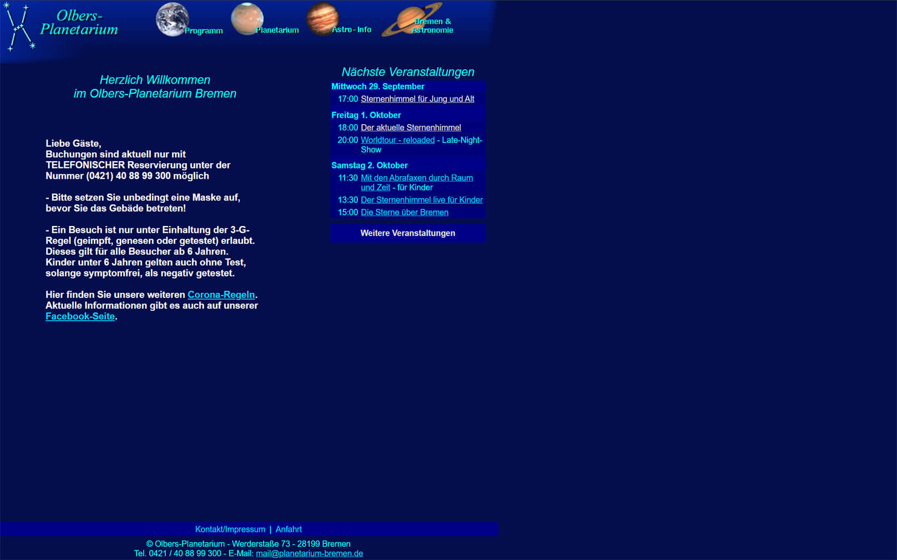
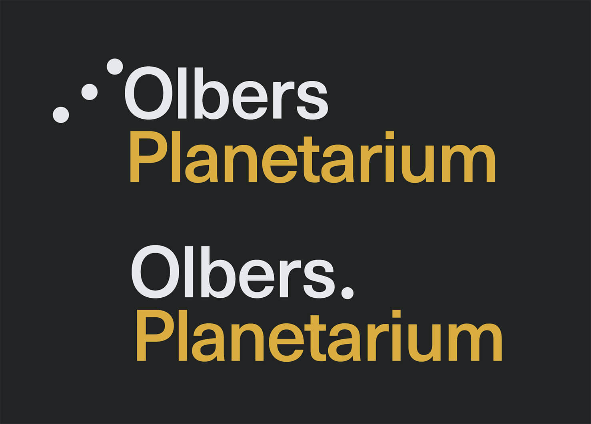
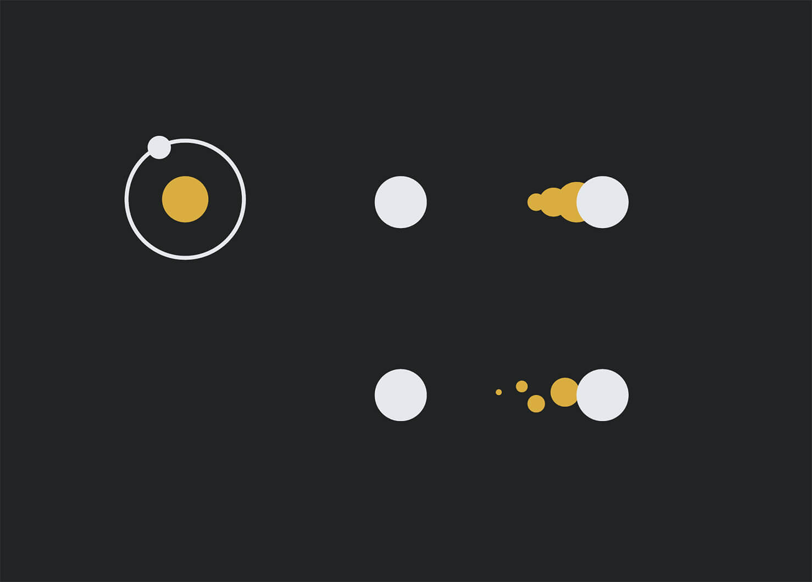
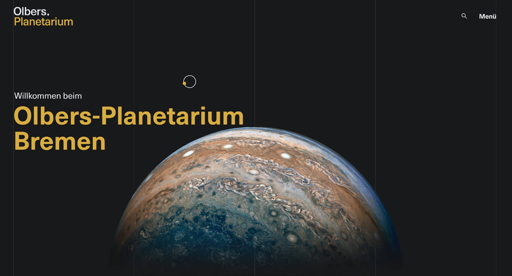

Ein Blick auf die Webseite des Olbers-Planetarium lässt erahnen, wie alt
sie ist. Zunächst fiel mir auf, dass die Schrift auf der Seite allgemein
mit 11px sehr klein und deshalb anstrengend zu lesen ist. Außerdem fällt
auf, dass die Seite in keinster Weise responsive ist. Die Seite hat eine
festgesetzte Breite, die sich weder auf großen Bildschirmen erweitert,
noch sich auf mobilen Geräten anpasst.
Um das Design aufzufrischen, habe ich zunächst der Seite eine neue
Farbpalette gegeben. Statt dem satten dunkelblau, benutze ich ein
dunkles Anthrazit als Hauptfarbe, mit einem gut kontrastierenden Gelb
als Akzentfarbe. Die harmonieren gut miteinander und passen gut zum
Astronomie-Thema der Seite. Außerdem habe ich ein neues, moderneres Logo
entworfen, dass zur neuen Seite passt.


Außerdem wollte ich bei diesem Projekt mit einem Custom-Cursor
experimentieren. Dazu habe ich drei Varianten gestaltet und ausprobiert.
Ich musste hier darauf achten, dass der Cursor nicht allzu sehr auffällt
und ablenkt, und dass Interaktionen wie das Hovern eindeutig erkennbar
bleiben. Letzendlich habe ich mich für die Variante mit dem Orbit
entschieden.
Die Seite ist auf der Basis eines vierspaltigen Rasters aufgebaut,
welches auch sichtbar im Design geblieben ist. Dies hilft die
unsichtbaren Linien des Rasters sichtbar zu machen und trägt zur
Ordnung auf der Seite bei.
Bei kleineren Screengrößen fällt das Raster auf ein zwei- und
schließlich auf ein einspaltiges Raster zusammen, um den Content
responsive darstellen zu können.
